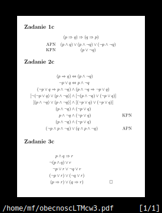

\documentclass[11pt]{article}
\usepackage[utf8]{inputenc}
\usepackage{geometry}
\geometry{c6paper}
\geometry{vmargin=0.3in,hmargin=0.25in}
\usepackage{amsmath}
\usepackage{amssymb}
\usepackage{verbatim}
\begin{document}
\section*{Zadanie 1c}
\begin{center}$(p\Rightarrow q) \Rightarrow (q\Rightarrow p)$\\
\vspace{0.2cm}
\begin{tabular}{c c}
APN & $(p\land q)\lor(p\land \neg q)\lor(\neg p \land \neg q)$\\
KPN & $(p\lor \neg q)$
\end{tabular}\end{center}
\section*{Zadanie 2c}
\begin{align*}
(p\Rightarrow q) &\Leftrightarrow (p\land \neg q)\\
\neg p \lor q &\Leftrightarrow p\land \neg q\\
(\neg p \lor q \Rightarrow p \land \neg q) &\land (p \land \neg q \Rightarrow \neg p \lor q)\\
[\neg(\neg p \lor q) \lor (p\land \neg q)] &\land [\neg(p\land\neg q)\lor(\neg p\lor q)]\\
[(p\land \neg q) \lor (p\land \neg q)] &\land [(\neg p\lor q)\lor(\neg p\lor q)]\\
(p\land\neg q)&\land(\neg p \lor q)\\
p\land\neg q&\land(\neg p\lor q)&\text{KPN}\\
(p\land\neg q)&\land(\neg p \lor q)\\
(\neg p \land p \land \neg q) &\lor (q\land p \land\neg q)&\text{APN}
\end{align*}
\section*{Zadanie 3c}
\begin{align*}
p\land q &\Rightarrow r\\
\neg(p\land q)&\lor r\\
\neg p \lor r &\lor \neg q \lor r\\
(\neg p \lor r) &\lor (\neg q \lor r)\\
(p\Rightarrow r)&\lor(q\Rightarrow r)&\square
\end{align*}
\end{document}